React JS.
O que é React JS ?
React é uma Biblioteca feita em JavaScript criada e mantida pelo Facebook. Vem com o objetivo de deixar as páginas mais "leves". Para começar a compreender, vamos relembrar do DOM. Dom é básicamente todos os elementos que estão na tela do browser. Cada item (botao,etc) é um elemento, e através do DOM conseguimos selecionar um elemento em específico e manipula-lo, adicionar evento, etc. Isso demanda processamento do computador do usuário que está acessando e dependendo do que você fizer, isso pode ser muito custoso.
Já no React isso não acontece, pois o react trabalha com o Virtual Dom. A grosso modo, é básicamente uma cópia do que você está vendo no computador só que direto na memória, uma cópia virtual. Você não ve mais ela existe.
Dessa forma, quando usamos React, ao realizarmos alguma alteração na página, na verdade inicialmente ela é alterada apenas na cópia (VirtualDom) e depois ele compara a tela(DOM) com o resultado da modificação feita no (VirtualDom), e em seguida, ele faz a alteração apenas naquele item em que foi alterado. Dessa forma o processamento é reduzido drasticamente, pois só é processado no DOM (browser) aquilo em que foi modificado e não o DOM inteiro.
Entendendo isso, que é a forma como o react trabalha, existe um conceito chamado SPA - Single Page Application, que é uma aplicação de uma página. Quando fazemos um projeto feito em react, nós temos apenas uma página e tudo é alterado dentro dessa mesma página.
Para instalar o React é necessário que seja instalado o Node, caso não saiba, vá para o nosso Módulo de Node.
Formas de criar projeto com React JS
Dentro do React existem várias formas de criarmos nossos projetos, aqui veremos as duas mais utilizadas no mercado.
Instalando via CRA - Create React App
Para começarmos, colocamos o comando: npmx create-react-app nomedoprojeto caso queiramos utilizar o React com JS. Já caso queiramos utilizar o React com TS, utilizamos o comando: npmx create-react-app nomedoprojeto --template typescript.
Para rodar o projeto, abrimos o terminal do VSCODE, e rodar o comando: npm start dessa forma ele já irá abrir o navegador com nosso projeto rodando geralmente na porta 3000.
Instalando via Vite
Basicamente o vite é uma biblioteca que nos auxilia a criar projetos entre várias outras coisas. Ele geralmente cria o projeto de forma mais rápido do que o normal. Aqui utilizamos o comando npm init vite nomedoprojeto -- --template react-js em caso de usar o React com JavaScript. Já caso queira utilizar o React com Typescript, colocamos o comando: npm init vite nomedoprojeto -- --template react-ts
Em seguida, utilizamos o comando npm install para instalarmos todas as bibliotecas, e estará configurado/pronto para ser utilizado. Você irá reparar que ele será praticamente igual, seja criado por CRA ou VITE.
Aqui para rodarmos o projeto colocamos o comando npm run dev.
Visão Geral de um Projeto Iniciado com React JS
Aqui iremos começar a entender tudo que vem dentro do projeto React criado. Para começar, vale saber que temos algumas diferenças sutís entre o projeto criado com CRA e com VITE (porém minúsculos detalhes).
Dentro da CRA, teremos a pasta PUBLIC, onde irá conter o arquivo INDEX HTML. É dentro desse arquivo index, que possui apenas uma div que toda a sua aplicação será renderizada. Já no VITE é um pouco mais limpo, e está fora da pasta public.
Em ambos os projetos terão uma pasta SRC, no qual dentro do CRA temos o APP.tsx e dentro do VITE temos o MAIN.TSX. Em sintaxe ambos os arquivos são exatamentes iguais. Em outras palavras, ali é onde está ordenando pegar o projeto inteiro e renderizar dentro da div principal. (Aqui eles pegam e jogam na tela). Agora, o projeto mesmo, está localizado dentro do arquivo APP.TSX (igual em ambos). Ali encontraremos o código da página em si.
O código Fonte fica dentro da pasta SRC.Componente
Geralmente a primeira coisa que fazemos quando estamos começando uma aplicação em React é ir no arquivo App.tsx e apagar tudo que está dentro dele. Todo o React é baseado em Componentes. Componentes são partes ou até mesmo um todo. Componente é basicamente uma função que geralmente retorna algo gráfico.
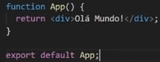 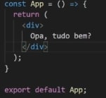Agora ao rodarmos o projeto teremos nosso primeiro Olá Mundo feito em ReactJS. Sempre que falarmos em criar um componente, provavelmente estaremos falando em criar uma função que retorna geralmente algo gráfico, podendo ser uma div, um botão, uma interface por completo. Tudo que iremos criar irá rodar dentro desse componente principal, inclusive podemos usar componentes dentro de componentes, passando dados ou não.
JSX
Antes de realmente mergulharmos no mundo do react, é importante entender sobre o famoso JSX e suas expressões. Ao criar o seu primeiro componente você irá perceber que foi utilizado HTML dentro de uma função JavaScript. Na verdade o que vimos não é HTMl(apesar de parecer bastante), e sim JSX. JSX é uma forma de digitar o código de forma mais simples, porém antes de ser exibido ele será convertido (pelo babel), e recria utilizando o código sem ser com JSX.
Basicamente na ilustração abaixo, mostra primeiro como que fica o código compilado pelo Babel e em seguida como que é mais simples digitar via JSX.
Em resumo, é um pseudo HTML que é traduzido em código JavaScript que é traduzido pelo compilador que no caso é o Babel. Provavelmente iremos reparar maiores diferenças entre o html e o jsx quando formos utilizar css inline, classes, id's, etc.
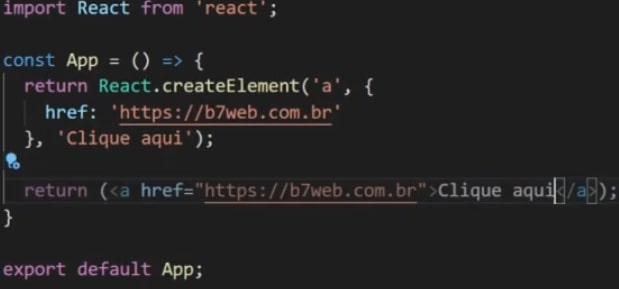Agora que já entendemos o que é o JSX e que ele simplifica a escrita de JS para HTML, vamos começar a entender o porque ele se torna realmente útil para nossas aplicações.
Expressões no JSX
Uma outra das várias vantagens do JSX é que além de colocarmos código HTML dentro do universo JS, também podemos colocar JS dentro do HTML. Para jogar uma variável dentro do JSX basta colocarmos {}, e tudo que fica ali dentro vira JS, na qual podemos fazer qualquer coisa do universo JS. (contas,etc). Nesse exemplo abaixo, mostro um exemplo do uso de expressões:
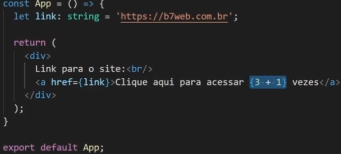Usando vários Componentes
Aqui é onde começamos a aprender realmente o fluxo do ReactJS, é a "vida real" dele. O ideal é que separemos cada componente em arquivos diferentes. Todo componente nós utilizamos ele como se fosse uma tag do HTML, abrimos e fechamos nele mesmo. Veja um Exemplo Abaixo:
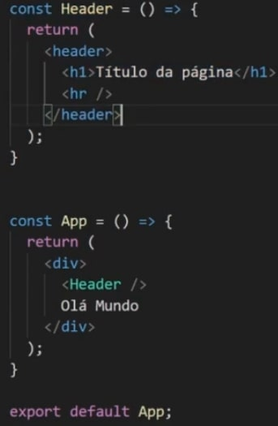Mas quando criar um componente ? Sempre que temos um bloco de código grande que precisemos de manutenção, criamos um componente. Sempre que uma parte for reutilizável devemos também criar um componente.
Cada componente deve ficar em um arquivo separado, pois imagine um software real onde teremos 200 componentes e todos no mesmo arquivo. Ficaria praticamente impossível localizarmos e darmos manutenção. Então como boa prática, dentro da pasta src criamos uma pasta com o nome de components, e lá colocamos os mesmos (importando e exportando).
Props em Components
Aliado com Components, props também é a base para a criação de aplicações WEB. Imagine que o cabeçalho acima tenha um texto personalizavel por exemplo. Ficaria inviável ficar criando um componente para cada texto que deseja exibir no cabeçalho. Para isso existem as props. Props são os "atributos do HTML". No JSX temos os componentes e as props ( que no html seria a tag e o atributo). Para criarmos uma prop, colocamos por exemplo :
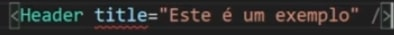Dessa forma você irá perceber que o typescript irá reclamar da palavra TITLE. Isso acontece, pois além de enviarmos as props para algum componente, é necessário que esse componente que irá receber esteja ciente/esperando receber as props. Para isso ele é recebido no parâmetro da função. Como estamos utilizando o TypeScript, é necessário typarmos essas props. Por padrão, criamos um type com o nome prop(como ele está dentro de um ecossistema separado, colocamos o nome de props mesmo). Exemplo abaixo de um componente recebendo props:
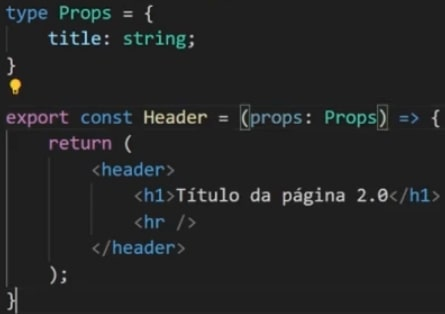Para utilizarmos essas props, podemos ou receber no parâmetro a props por inteiro e utilizar {props.atributoPassado}, ou podemos desestruturar somente o que iremos usar e receber {}.
Assim como no TS normal, ao typarmos as props no componente que a receberá, podemos colocar ? após o seu nome, para que ele passe a ser opcional. name?: string;. Caso não seja colocado esse operador ? ele não irá aceitar a chamada do componente em questão sem a prop.
Children & Fragments
Outro conceito de extrema importância da base de React, é o conceito de Children e de Fragments. O conceito de fragment dentro do react é que nós só podemos retornar um único elemento. Não é possível retornar mais de um elemento. Por exemplo: Imagine que tenhamos uma div, e dentro dela um h1 e um p. É possível retornar esses 03 elementos, pois na verdade o que está sendo retornado é apenas uma div. Porém existirá casos no qual não caberá uma div, e você precise retornar apenas o h1 e o p (porexemplo). Nessa hora que entram os fragments. Fragments é uma forma de "envelopar" < > conteúdo < /> , para que consigamos retornar mais de um componente. Resumidamente o fragment serve para burlar a regra do retorno de um único componente.
Mas e o Children ? Children é quando temos um componente que não abrimos e fechamos no mesmo item ou seja, abrimos e fechamos de forma separada.
FALTA REVER CHILDREN
States & Events
Criando Eventos
Já conhecemos o que são eventosdos nossos estudos de JS. (Caso não lembre volte ao módulo de Js-DOM). No React utilizamos a sintaxe: onClick={}. Agora precisamos criar uma função, passar a denifição dela e por fim cria-la.
Segue o exemplo:
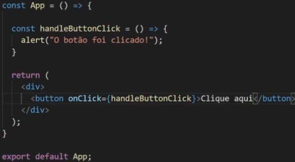Também é possível criar uma função anonima c/ arrow function dentro dos {}.Evoluindo veremos vários tipos de evento, como evento de teclado, mudanças de algo, etc. Mas para avançar é de fundamental saber a base de como definir e como funciona sua estrutura.
Usando State
Aqui é onde começaremos a estudar os famosos Hooks do react. Hooks nada mais são do que funções do JavaScript, podendo ser executados por si só. Para entendermos o conceito de state precisamos saber que o React JS trabalha com o conceito de imutabilidade, ou seja, no React nós não alteramos nenhum dado em específico e sim trabalhamos com seu estado. Não adiantaira mudar uma variável diretamente pois assim que isso acontecesse o componente seria executado novamente e dessa forma ele voltaria pro seu valor original.
Exemplo : Caso você tenha uma tag p, como valor 'Guilherme', e alteremos ele para João via função por exemplo, o nome seria alterado em memória, o componente inteiro seria renderizado novamente, e em seguida voltaria a assumir o seu valor inicial.
Enfim entramos no useState que serve para gerenciar o estado de algum valor onde poderemos alterar e consultar também. Vamos a prática:
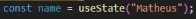Aqui atribuimos o useState com o valor inicial de Matheus, para a variável name. Porém ao darmos um console log nessa variável, iremos perceber que o useState retorna um array com duas posições. O primeiro valor é o seu valor inicial setado na função acima, e a segunda posição é uma função, que servirá para alterar a variável inicial em questão(nesse caso o name), que por padrão nomeamos com setName, ou setIdade, enfim, set o nome da variavel em questão.
Agora que já entendemos a estrutura do useState (variavelAtual, funçãoParaAlterarEstado => useState('ValorInicial)), é necessáriio saber que o usestate sempre será visto de forma desestruturada. Exemplo:
const [name, setName] = useState('Guilherme')
Dessa forma, sempre que em tela precisemos alterar o valor de name, utilizamos o setName.
Podemos ter um botão com um evento onClick que ativa uma função mudarNome, por exemplo, dentro dessa função usamos o setName('GuiGui'), que ela será alterada.
Sempre que utilizamos essa função (vinda no segundo parametro do useState), temos como receber um prevState por parâmetro. Esse prevState apenas nos informa o valor do estado atual. Como boa prática, ao invés de mudarmos direto, podemos ativar uma function para se blindar de possíveis erros.
setNumber((prevState)=> prevstate + 1)
Dessa forma podemos nos "blindar" de double clicks, entre outros possíveis mini-bugs que o react pode vir a oferecer.
Aqui abaixo temos um exemplo do uso de useState dentro de um input, onde pegamos o nome digitado e replicamos embaixo.
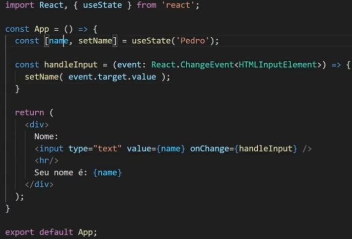Comunicação entre Componentes
Quando a comunicação entre componentes se dá de pai para filho, uma das formas que temos de comunicar é pelas props, vistas nos tópicos acima. Mas e quando precisamos passar de filho para pai ? Vai ser normal em nossa caminhada nos depararmos com cenários na qual iremos precisar ao clicar em algo dentro de um componente, ativar alguma função que esteja do lado de fora dele(em algum outro componente).
Por exemplo, dentro do componente app, temos o comopnente botao. Assim que clicarmos no botão, queremos ativar uma função que está dentro do componente App, como resolver? Para solucionar, nós declaramos a função a ser executada normalmente dentro do componente App, e em seguida passamos essa função via PROPS para o componente botão. Não precisa ser o mesmo nome da função declarada. Resumo: No componente App voce cria a função botaoEventAction e la nas props, voce pode passar como clickFn={botaoEventAction} por exemplo. Dessa forma, o componente botao irá receber essa props, e lá ativar o evento onClick={clickFn} .
Exemplo em código abaixo:
Componente app enviando a função via prop:
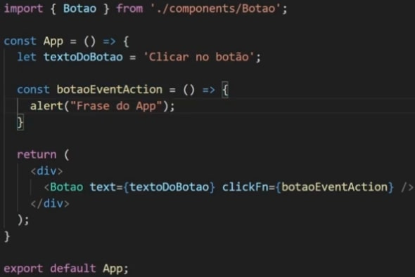Componente Botao recebendo a função via prop:
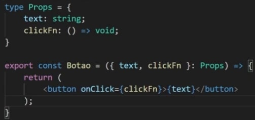Outra coisa que temos que nos atentar, é que é possível enviarmos uma frase por exemplo do filho para o pai via parâmetros.
Renderizando Listas
Constantemente dentro de nossas aplicações iremos nos deparar com a necessidade de renderizar listas por diversos motivos. Então mãos a obra. Supomos que tenhamos uma lista de mercado let lista = ['maca','pera']. Para renderizarmos essa lista no react, iremos necessitar da ajuda do JSX + expressões. No JS cru, temos a função map, que percorre todo um array. Aqui usaremos ela combinado junto com nosso JSX.
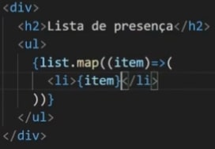Dessa simples forma nossa lista estará impressa na nossa aplicação. Porém, dentro do ReactJs, todo filho dentro de uma lista (li), cada child dessa lista precisa ter uma prop chamda key, na qual deve ser única. Dessa forma cada elemento da lista poderá ser reconhecido de forma individual. Mas de onde arrumar um número/chave individual ?
Dentro do método map, nós podemos receber dois parâmetros. o primeiro é o item a ser iterado pelo array, e o segundo é um item chamado index. Ele é básicamente um número que corresponde a posição do item dentro do array. Nesse caso, podemos aproveitar esse index para ele mesmo ser a nosas key do array.
Exemplo abaixo:

Da mesma forma que na lista acima nós repetimos uma li direta, é possível criarmos um componente , que retorne essa lista, e ao invés de colocarmos o li para repetir, colocar o componente em questão. Porém o x da questão é que ao enviarmos um componente para ser repetido no lugar da li (que é o que voce verá no dia a dia), voltará com o erro da key.
Para solucionar isso, pasasmos o index junto com o componente e suas props. Sempre que renderizarmos qualquer coisa dentro de uma lista, é obrigatório no mesmo lugar que está o map enviar a prop key.
Exemplo:
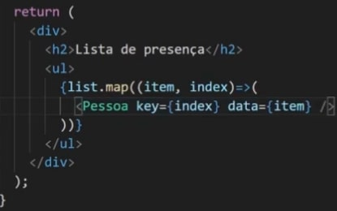